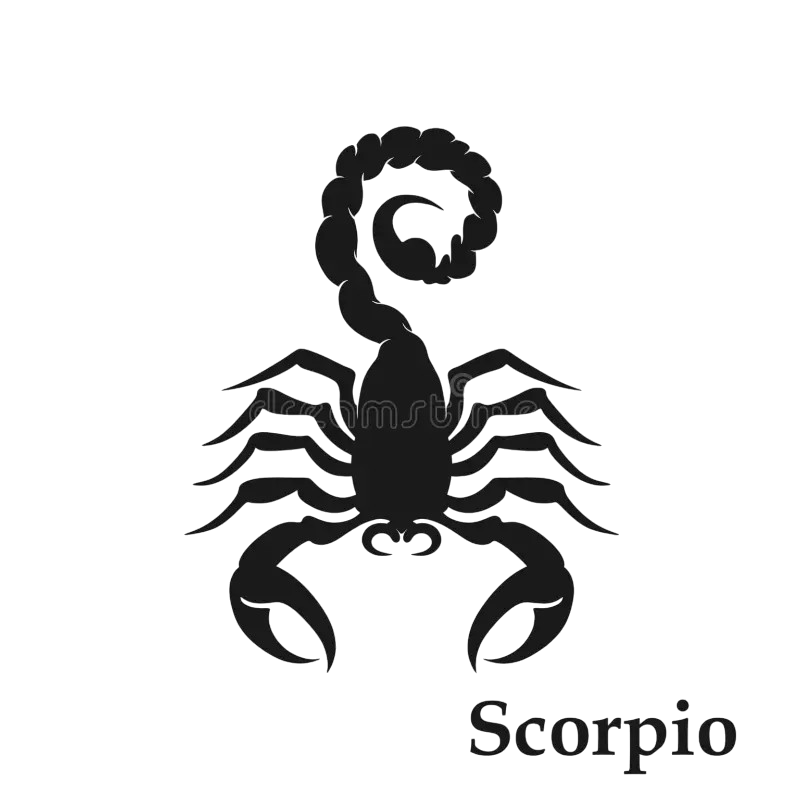

Info: Ο Σκορπιός (♏) είναι αστρολογικό ζώδιο, το οποίο συνδέεται με τον αστερισμό του Σκορπιού. Σύμφωνα με τον τροπικό ζωδιακό, ο Σκορπιός καταλαμβάνεται από τον
Ήλιο από 23 Οκτωβρίου μέχρι 22 Νοεμβρίου. Στον αστρικό ζωδιακό, ο αστερισμός καταλαμβάνεται κατά την περίοδο από 16 Νοεμβρίου έως 15 Δεκεμβρίου. Το ζώδιο απέναντι από τον Σκορπιό είναι ο Ταύρος.
Πιο αναλυτικά τα βασικά χαρακτηριστικά του Σκορπιού:
Ποιότητα:
Σταθερός (Επιμονή, Προσήλωση στους στόχους, Αντοχή)
Κυβερνήτης Πλανήτης:
Πλούτωνας (Συμβολίζει τη μεταμόρφωση, πάθος, δράση και δύναμη)
Αντίθετο Ζώδιο:
Ταύρος
Θετικά:
Αποφασιστικότητα , Αφοσίωση , Πίστη
Αρνητικά:
Ζήλια , Εκδικητικότητα , Μυστικοπάθεια

Χαρακτηριστικά & Προσωπικότητα του Σκορπιού
Ο Σκορπιός είναι ένα ζώδιο που ξεχωρίζει για την ένταση, το πάθος και τη βαθιά συναισθηματική του δύναμη. Από τα βασικά χαρακτηριστικά του είναι η αποφασιστικότητα, η μυστικοπάθεια και η ικανότητά του να μεταμορφώνει τη ζωή του μέσα από εμπειρίες. Δεν λειτουργεί επιφανειακά και προτιμά πάντα τις βαθιές και ουσιαστικές σχέσεις.
Το ζώδιο αυτό ανήκει στο στοιχείο του νερού, κάτι που επηρεάζει έντονα την ψυχολογία, τα συναισθήματα και τη διαίσθησή του. Οι Σκορπιοί έχουν έντονο εσωτερικό κόσμο και συχνά αντιλαμβάνονται πράγματα που δεν λέγονται, βασιζόμενοι στη διαίσθησή τους.
Η προσωπικότητα του Σκορπιού χαρακτηρίζεται από δύναμη, πάθος και αφοσίωση. Είναι άνθρωπος που δεν κάνει τίποτα μισό και όταν δεθεί με κάποιον, δίνεται ολοκληρωτικά. Παρόλο που μπορεί να φαίνεται κλειστός ή μυστηριώδης, μέσα του έχει πολύ έντονα συναισθήματα και μεγάλη ευαισθησία.
Στην προσωπικότητά του κυριαρχεί η ανάγκη για έλεγχο, αλήθεια και συναισθηματικό βάθος. Δεν αντέχει τις επιφανειακές σχέσεις και αναζητά έντονες και αληθινές συνδέσεις.
Καριέρα & Στοιχείο Σκορπιού
Στην καριέρα, ο Σκορπιός αποδίδει εξαιρετικά σε επαγγέλματα που απαιτούν ανάλυση, στρατηγική και ψυχραιμία. Μπορεί να διακριθεί σε τομείς όπως η ιατρική, η ψυχολογία, η έρευνα, η αστυνομία, τα οικονομικά και γενικά σε επαγγέλματα που απαιτούν συγκέντρωση και αντοχή.
Η ικανότητά του να εστιάζει βαθιά τον βοηθά να λύνει σύνθετα προβλήματα, ενώ η επιμονή του τον κάνει εξαιρετικά αποτελεσματικό σε δύσκολες καταστάσεις.
Ο Σκορπιός ανήκει στο στοιχείο του νερού, το οποίο σχετίζεται με το συναίσθημα, τη διαίσθηση και το ψυχολογικό βάθος. Αυτό το στοιχείο τον κάνει ιδιαίτερα έντονο συναισθηματικά και ικανό να καταλαβαίνει καταστάσεις σε βαθύτερο επίπεδο από τους περισσότερους ανθρώπους.
Συμβατότητα & Σχέσεις Σκορπιού
Όσον αφορά τη συμβατότητα, ο Σκορπιός ταιριάζει ιδιαίτερα με ζώδια του νερού, όπως ο Καρκίνος και οι Ιχθύες, καθώς μοιράζονται έντονο συναισθηματικό βάθος και διαίσθηση. Επίσης, έχει πολύ καλή χημεία με ζώδια της γης, όπως η Παρθένος και ο Αιγόκερως, τα οποία του προσφέρουν σταθερότητα και ισορροπία.
Οι σχέσεις του Σκορπιού βασίζονται στην απόλυτη αφοσίωση, την εμπιστοσύνη και το συναισθηματικό βάθος. Δεν εμπιστεύεται εύκολα, αλλά όταν το κάνει, δένεται πολύ δυνατά και προστατεύει έντονα τον σύντροφό του. Χρειάζεται ειλικρίνεια και σταθερότητα για να νιώσει ασφάλεια σε μια σχέση.
Στον έρωτα είναι παθιασμένος, έντονος και απόλυτα δοτικός. Δεν τον ενδιαφέρουν οι επιφανειακές σχέσεις και αναζητά μια σύνδεση που να τον αγγίζει βαθιά. Για να λειτουργήσει μια σχέση μαζί του, χρειάζεται ειλικρίνεια, αφοσίωση και συναισθηματική σταθερότητα.
Συχνές Ερωτήσεις για τον Σκορπιό (FAQ)
❓ Ποια είναι τα βασικά χαρακτηριστικά του Σκορπιού;
Ο Σκορπιός θεωρείται ένα από τα πιο δυναμικά, μυστηριώδη και συναισθηματικά βαθιά ζώδια του ζωδιακού κύκλου. Ανήκει στο στοιχείο του Νερού, γεγονός που του προσδίδει έντονη διαίσθηση, συναισθηματική ένταση και εξαιρετική ψυχολογική αντίληψη. Οι άνθρωποι που έχουν γεννηθεί κάτω από αυτό το ζώδιο χαρακτηρίζονται από αποφασιστικότητα, πάθος και ισχυρή θέληση. Ο Σκορπιός σπάνια αντιμετωπίζει τις καταστάσεις επιφανειακά και συνήθως αναζητά το βαθύτερο νόημα πίσω από κάθε εμπειρία ή σχέση. Διαθέτει μεγάλη αντοχή στις δυσκολίες και μπορεί να προσαρμοστεί ακόμη και στις πιο απαιτητικές συνθήκες. Παράλληλα, είναι ιδιαίτερα προστατευτικός απέναντι στους ανθρώπους που αγαπά και δείχνει αφοσίωση όταν αναπτύξει εμπιστοσύνη. Η εσωτερική του δύναμη, η επιμονή και η ανάγκη του για αλήθεια αποτελούν από τα πιο χαρακτηριστικά στοιχεία της προσωπικότητάς του.
❓ Είναι ο Σκορπιός καλός στα οικονομικά;
Ο Σκορπιός θεωρείται γενικά πολύ ικανός στη διαχείριση των οικονομικών του, καθώς διαθέτει στρατηγική σκέψη, υπομονή και ισχυρή ανάγκη για ασφάλεια και έλεγχο. Συνήθως δεν λαμβάνει παρορμητικές οικονομικές αποφάσεις και προτιμά να αναλύει προσεκτικά κάθε επένδυση ή επαγγελματική ευκαιρία πριν προχωρήσει. Η διορατικότητα και η ικανότητά του να αντιλαμβάνεται τις εξελίξεις τον βοηθούν συχνά να προστατεύει τα οικονομικά του συμφέροντα και να δημιουργεί μακροπρόθεσμη σταθερότητα. Παράλληλα, διαθέτει μεγάλη επιμονή και δεν εγκαταλείπει εύκολα τους οικονομικούς του στόχους. Αν και μπορεί να είναι ιδιαίτερα προσεκτικός ή ακόμα και μυστικοπαθής σχετικά με τα οικονομικά του ζητήματα, αυτή η στάση τον βοηθά να διατηρεί τον έλεγχο και να αντιμετωπίζει αποτελεσματικά δύσκολες καταστάσεις.
❓ Είναι ο Σκορπιός ζηλιάρης και έντονος στις σχέσεις;
Ο Σκορπιός θεωρείται ένα από τα πιο παθιασμένα και συναισθηματικά έντονα ζώδια στις προσωπικές σχέσεις. Όταν ερωτεύεται ή αναπτύσσει συναισθηματικό δεσμό με κάποιον, επενδύει βαθιά και επιθυμεί απόλυτη εμπιστοσύνη, αφοσίωση και ειλικρίνεια. Αυτή η έντονη συναισθηματική εμπλοκή μπορεί σε ορισμένες περιπτώσεις να εκδηλωθεί ως ζήλια ή κτητικότητα, ιδιαίτερα όταν αισθάνεται ανασφάλεια ή αμφιβολία για τα συναισθήματα του άλλου. Ωστόσο, η συμπεριφορά αυτή συνδέεται κυρίως με την ανάγκη του να προστατεύσει τη σχέση και όχι απαραίτητα με την επιθυμία ελέγχου. Όταν νιώσει ασφάλεια και εμπιστοσύνη, ο Σκορπιός γίνεται ένας από τους πιο πιστούς, αφοσιωμένους και προστατευτικούς συντρόφους, προσφέροντας βαθιά συναισθηματική σύνδεση και απόλυτη αφοσίωση.
❓ Γιατί ο Σκορπιός είναι τόσο μυστικοπαθής;
Η μυστικοπάθεια αποτελεί ένα από τα πιο γνωστά χαρακτηριστικά του Σκορπιού και συνδέεται άμεσα με την ανάγκη του για συναισθηματική προστασία και προσωπικό έλεγχο. Ο Σκορπιός δεν αποκαλύπτει εύκολα τις σκέψεις, τα σχέδια ή τα συναισθήματά του, καθώς προτιμά πρώτα να παρατηρεί και να αξιολογεί τους ανθρώπους γύρω του. Αυτή η επιφυλακτικότητα δεν σημαίνει απαραίτητα έλλειψη εμπιστοσύνης, αλλά αποτελεί έναν μηχανισμό αυτοπροστασίας. Ο Σκορπιός επιθυμεί να γνωρίζει βαθιά τους άλλους πριν εκτεθεί ο ίδιος συναισθηματικά. Παράλληλα, η έντονη διαίσθησή του τον κάνει ιδιαίτερα προσεκτικό στις προσωπικές του σχέσεις και στις αποφάσεις του. Όταν όμως δημιουργηθεί πραγματική εμπιστοσύνη, μπορεί να αποκαλύψει έναν ιδιαίτερα ευαίσθητο, αφοσιωμένο και βαθιά συναισθηματικό χαρακτήρα.
❓ Πώς αντιδρά ο Σκορπιός όταν πληγωθεί συναισθηματικά;
Ο Σκορπιός βιώνει τις συναισθηματικές πληγές με μεγάλη ένταση, ακόμη κι αν δεν το δείχνει εξωτερικά. Όταν αισθανθεί προδοσία, απογοήτευση ή συναισθηματικό πόνο, συνήθως αποσύρεται και κλείνεται στον εαυτό του, προσπαθώντας να επεξεργαστεί τα συναισθήματά του μακριά από τους άλλους. Η εμπιστοσύνη αποτελεί θεμελιώδη αξία για τον Σκορπιό και όταν αυτή χαθεί, είναι εξαιρετικά δύσκολο να αποκατασταθεί. Παρότι μπορεί να φαίνεται ψύχραιμος ή απόμακρος, εσωτερικά βιώνει έντονα τον πόνο και αναλύει βαθιά τα γεγονότα που τον επηρέασαν. Με τον χρόνο, όμως, διαθέτει την ικανότητα να μετατρέπει τις δύσκολες εμπειρίες σε προσωπική δύναμη και εξέλιξη. Η ψυχική του ανθεκτικότητα αποτελεί ένα από τα σημαντικότερα χαρακτηριστικά του.
❓ Ποιες διάσημες προσωπικότητες ανήκουν στο ζώδιο του Σκορπιού;
Πολλές διάσημες προσωπικότητες από τον χώρο της επιστήμης, της ψυχαγωγίας και των επιχειρήσεων έχουν γεννηθεί κάτω από το ζώδιο του Σκορπιού. Ανάμεσά τους βρίσκεται ο Bill Gates, ένας από τους σημαντικότερους επιχειρηματίες και τεχνολογικούς πρωτοπόρους της σύγχρονης εποχής. Στον χώρο του κινηματογράφου ξεχωρίζουν ο Leonardo DiCaprio και η Julia Roberts, οι οποίοι έχουν διακριθεί για το ταλέντο, την επιμονή και τη δυναμική παρουσία τους. Επίσης, καλλιτέχνες όπως η Katy Perry και ο Drake έχουν συνδεθεί με τη δημιουργικότητα, το πάθος και την ισχυρή προσωπικότητα που συχνά αποδίδονται στον Σκορπιό. Πολλοί αστρολόγοι θεωρούν ότι χαρακτηριστικά όπως η αποφασιστικότητα, η στρατηγική σκέψη και η έντονη συναισθηματική δύναμη αντικατοπτρίζονται στις προσωπικότητες αυτών των διάσημων ανθρώπων.
 ΚΡΙΟΣ
ΚΡΙΟΣ
 ΤΑΥΡΟΣ
ΤΑΥΡΟΣ
 ΔΙΔΥΜΟΙ
ΔΙΔΥΜΟΙ
 ΚΑΡΚΙΝΟΣ
ΚΑΡΚΙΝΟΣ
 ΛΕΩΝ
ΛΕΩΝ
 ΠΑΡΘΕΝΟΣ
ΠΑΡΘΕΝΟΣ
 ΖΥΓΟΣ
ΖΥΓΟΣ
 ΣΚΟΡΠΙΟΣ
ΣΚΟΡΠΙΟΣ
 ΤΟΞΟΤΗΣ
ΤΟΞΟΤΗΣ
 ΑΙΓΟΚΕΡΩΣ
ΑΙΓΟΚΕΡΩΣ
 ΥΔΡΟΧΟΟΣ
ΥΔΡΟΧΟΟΣ
 ΙΧΘΥΕΣ
ΑΡΙΘΜΟΛΟΓΙΑ
ΙΧΘΥΕΣ
ΑΡΙΘΜΟΛΟΓΙΑ